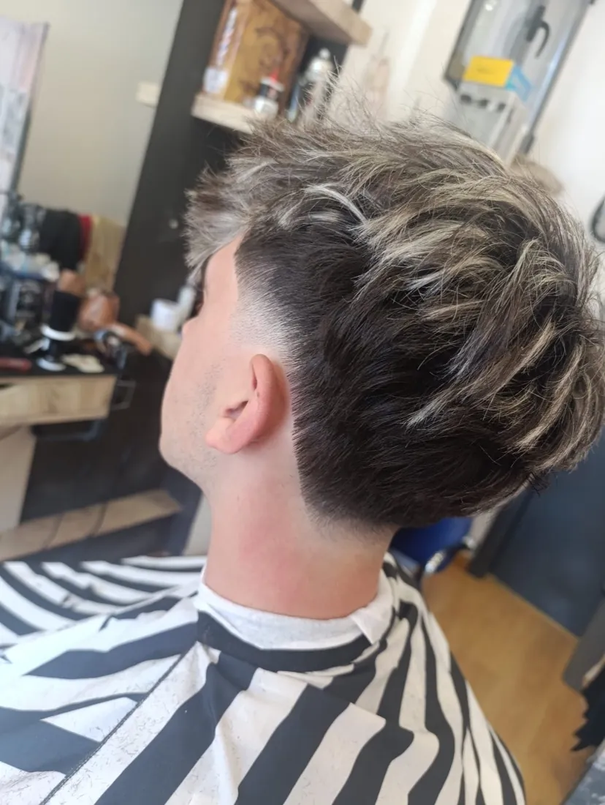
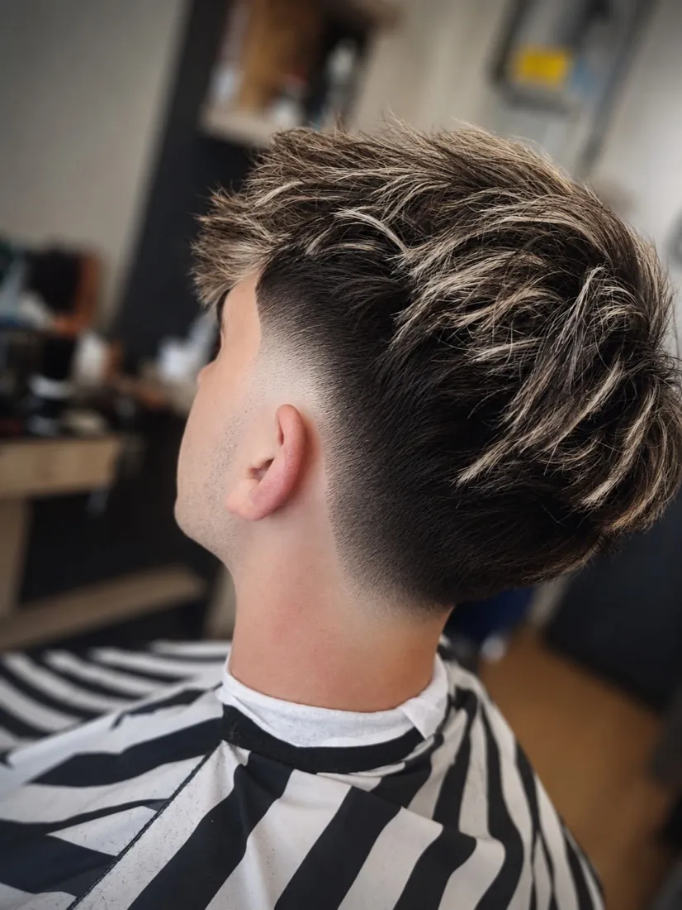
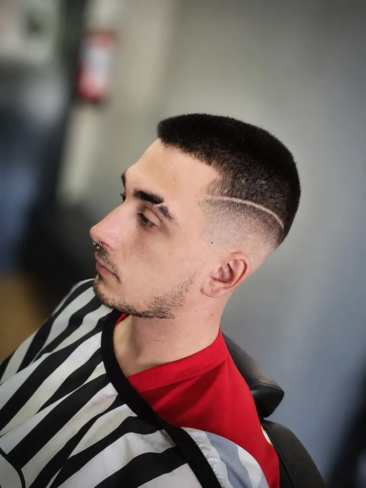
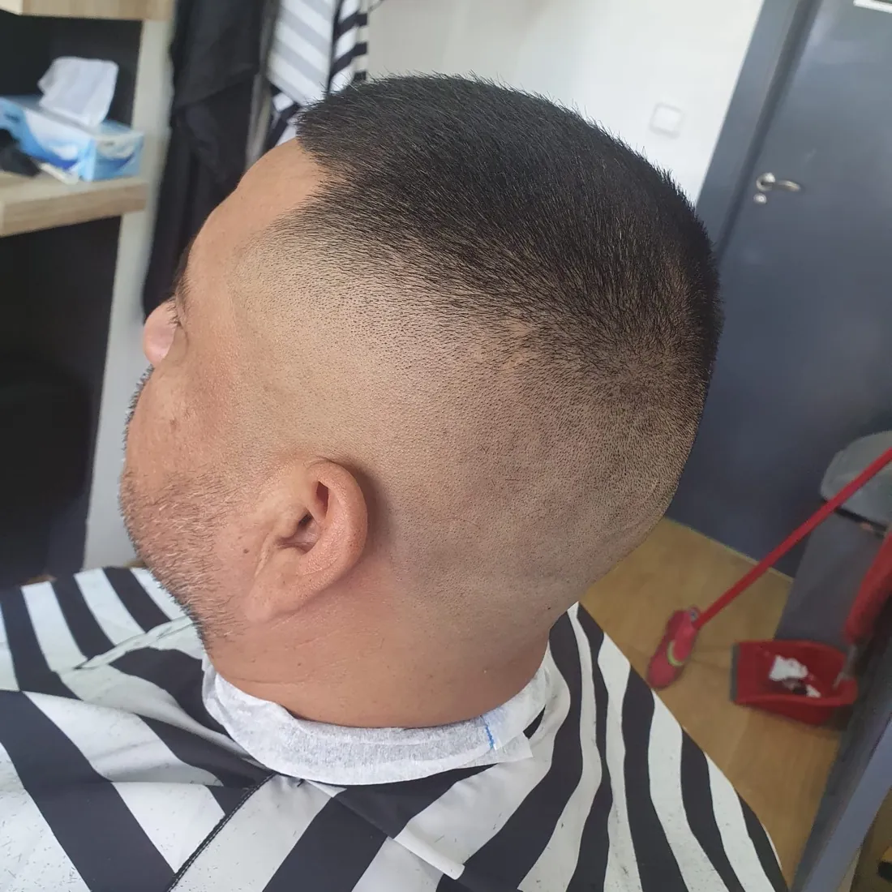

Cada foto es un resultado real de un cliente real en Norden Barber Cuenca. Sin filtros que disimulen, sin trucos de edición. Solo precisión, técnica y las herramientas adecuadas.




Todos los trabajos realizados en Norden Barber — Cuenca, Castilla-La Mancha
Quiero mi corte — WhatsApp LlamarAntes de cada corte, estudiamos tu tipo de cabello, forma de cara y estilo de vida para recomendarte el mejor resultado posible en Cuenca.
Utilizamos maquinaria de alta gama calibrada con precisión milimétrica. La diferencia entre un buen corte y uno excelente está en las herramientas.
Ningún corte sale sin una revisión de detalle. Contornos, patillas, nuca y laterales se revisan al milímetro antes de que salgas de la silla.